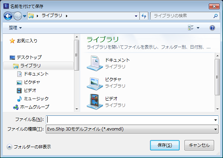

Evo.Shipドキュメントの要素をParasolid形式で出力したり、要素の一部を別のドキュメントとしてエクスポートすることができます。
ファイルメニューの"エクスポート"でダイアログが表示されます。

選択した要素とその関連要素を別のモデルファイルに書き出します。
ファイルの種類で「Evo.Ship 3Dモデルファイル」を選択し、ファイル名を入力します。
対象要素を選択し、必要なら要素グループも出力オプションをチェックします。
アクティブなドキュメントの要素をParaolid形式またはSTL形式でファイルに書き出します。
(非表示にされている要素は書き出しません。)
作成するParasolid形式のファイル名を選択します。
"ファイルの種類"で出力形式を"テキスト"か"バイナリ"、"STL"を設定します。
"設定"ボタンで出力するParasolidのバージョンやSTLのオプションを設定します。
特定の要素グループ配下の要素を別のドキュメントとして作成します。
モデル構成ウィンドウで要素グループを選択し、コンテキストメニュー"エクスポート"で実行します。
出力するファイル名を選択します。